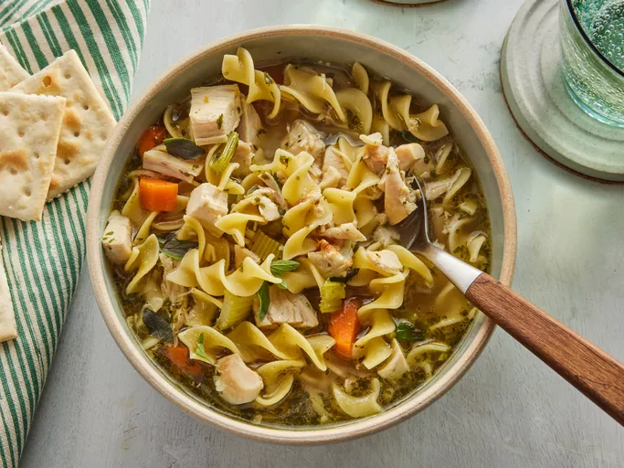

Chicken Noodle Soup

Description
A hearty brothy soup filled with seasonable vegetables, seasoned chicken and noodles!
- 2 liters of favorite chicken broth
- 2 chicken breasts
- 2 carrots
- 2-3 stalks of celery
- 1 cup of fresh or frozen peas
- 1 medium onion or leeks if you like!
- 1-2 bay leaves
- 1 table spoon of thyme
- 1 table spoon of fresh garlic
- 1 tablespoon olive oil
Directions
- Put your pot on the stove and heat on medium. Heat the oil while you chop your ingredients
- While oil is heating begin chopping your carrots, celery, and oinions into bite size pieces
- Put vegetables into the heated oil and stir until they begin to sweat 3-5 mins
- Chop chicken and now remove veggies from the pot and set aside
- Add a tiny bit more oil to the pot and allow to heat and add in chicken and cook until browned.
If you see brown forming on the bottom of the pan, GOOD, now re add the vegetables and stir for 2 mins.
- Add in chicken stock and seasonings
- Cook for 45 mins to 1hr on medium heat
- Add noodles, cook until noodles are done
- Enjoy!
Home